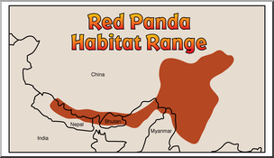
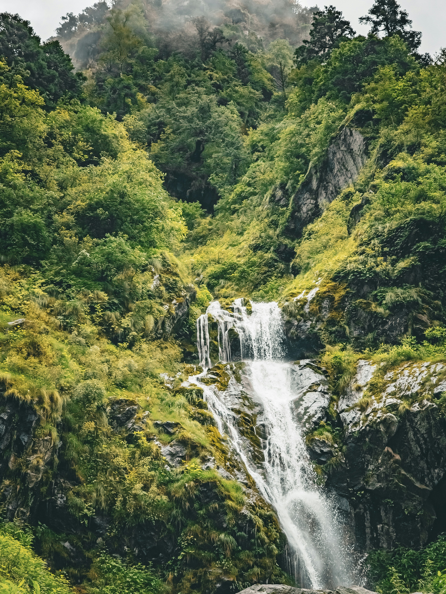

Red Panda Habitat
Red pandas live in temperate forests of the Himalayas, including Bhutan, Nepal, India, Myanmar, and China. They prefer areas with bamboo forests and moderate temperatures.
These forests are often at high elevations, and red pandas spend a lot of time in the trees. Bamboo makes up most of their diet, so dense bamboo thickets are essential for their survival.
Preserving these habitats is crucial because deforestation and habitat fragmentation are major threats to red pandas.
Back to Home